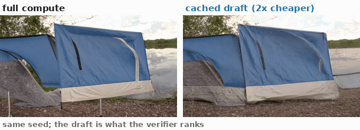

Rankings survive caching
Cached and full-compute orderings agree closely, which is the only property search depends on. The draft the verifier scores costs about half of the sample it stands in for.
0.905median Spearman ρ
72%top-1 agreement
2×cheaper per draft
